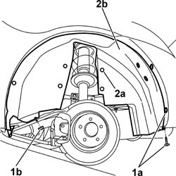

7055B44 LEFT HAND REAR SUPPLEMENTARY WHEEL ARCH - R+R
- Path
- Procedures > 70 FITTINGS > 7055 MOULDINGS ON PROTECTIONS > 7055B EXTERIOR PROTECTIONS > 7055B44 LEFT HAND REAR SUPPLEMENTARY WHEEL ARCH - R+R
- Kind
- repair procedure (removal / refitting; the operation number is the code)
- Applies to
- all engines; all production periods
- Interactive page
- https://sloeber94.github.io/elrnDB-aGt/en/#/125001974
Applies to: all engines; all production periods
 Removing
Removing
 Refitting
RefittingOp. 4450B06 LEFT REAR WHEEL R R
1. Undo the bolts (1a) and the nut (1b) fixing the wheel arch.
2. Using the special tool, release the retaining plugs (2a) and remove the wheel arch (2b).
 | Name | Country |
|---|---|---|
2a | Scraper blade | 1.823.015.000 |

Applies to: all engines; all production periods
Refitting
RemovingCheck that the wheel arch is undamaged.
Fit the additional whee larch.
Fasten the wheel arch using the retaining plugs.
Tighten the bolts and the nut fixing the wheel arch.
Topics linked from this page (1)
Topics that link to this page (9)
- 3340A35 LEFT REAR WHEEL RPM SENSOR - R R
- 3340A44 REAR WHEEL RPM SENSORS (TWO) R R
- 5010C60 LH OR RH REAR AIR OUTLET -ONE- R R
- 5505C82 WIRING incorporated in REAR BUMPER RR
- 5540E10 REAR FOG LAMP (ONE), LH OR RH - R+R
- 5550D24 REVERSING LIGHT - R+R
- 7055B43 LH OR RH REFLECTOR(ONE) ON REAR BUMPERS - R R
- 7055B45 RIGHT HAND REAR SUPPLEMENTARY WHEEL ARCH - R+R
- 7210E66 REAR BUMPER